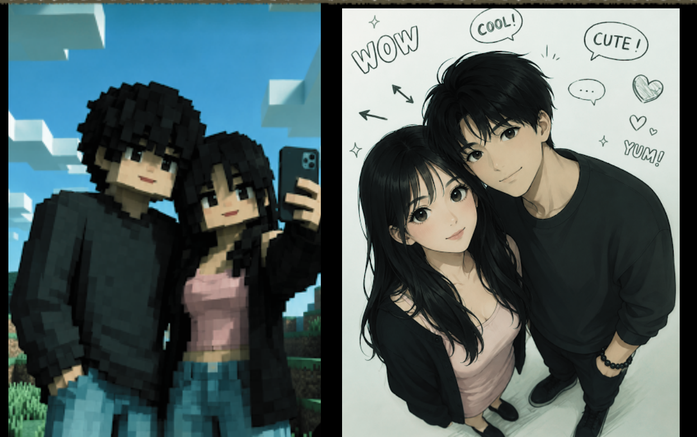
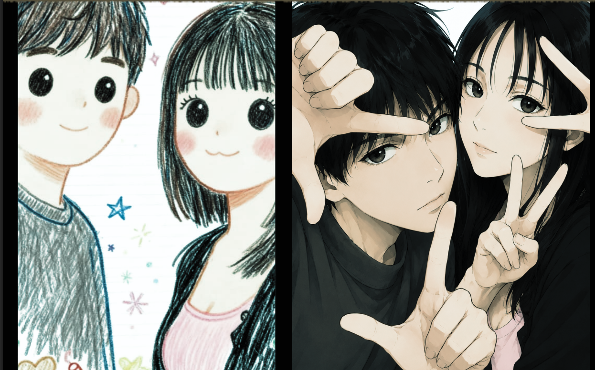
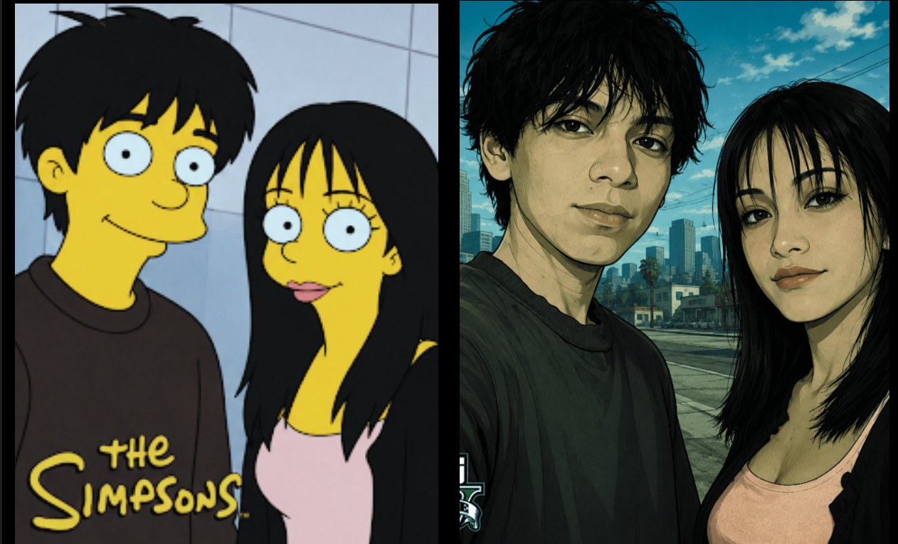
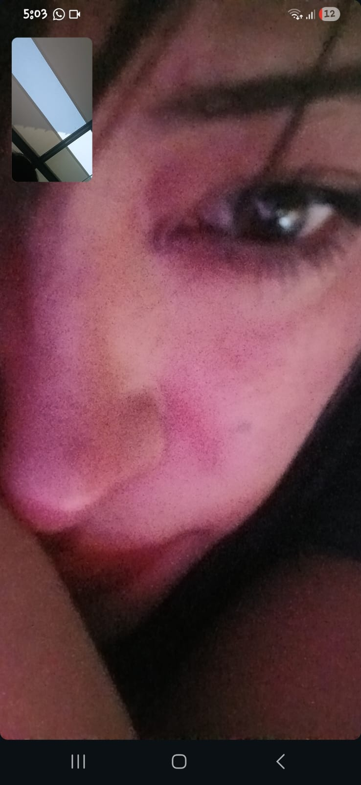
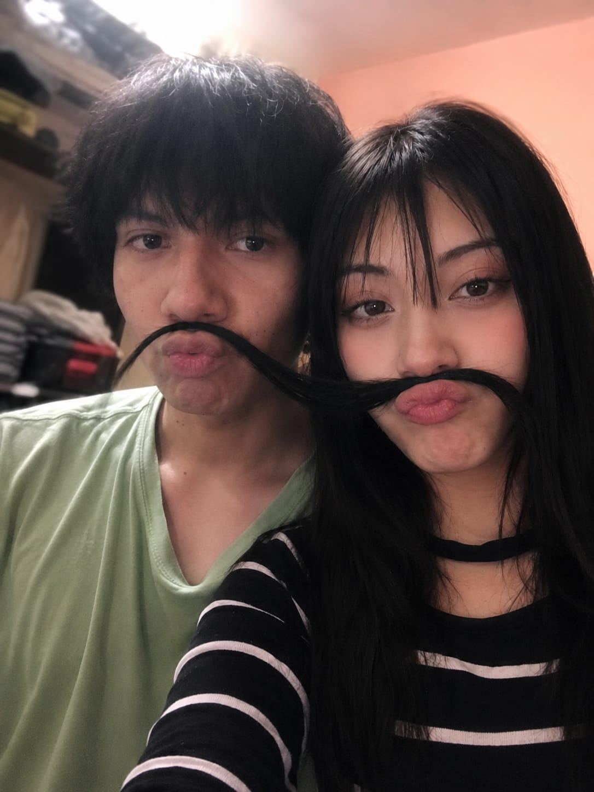
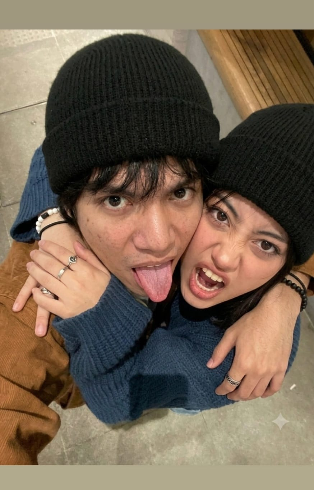
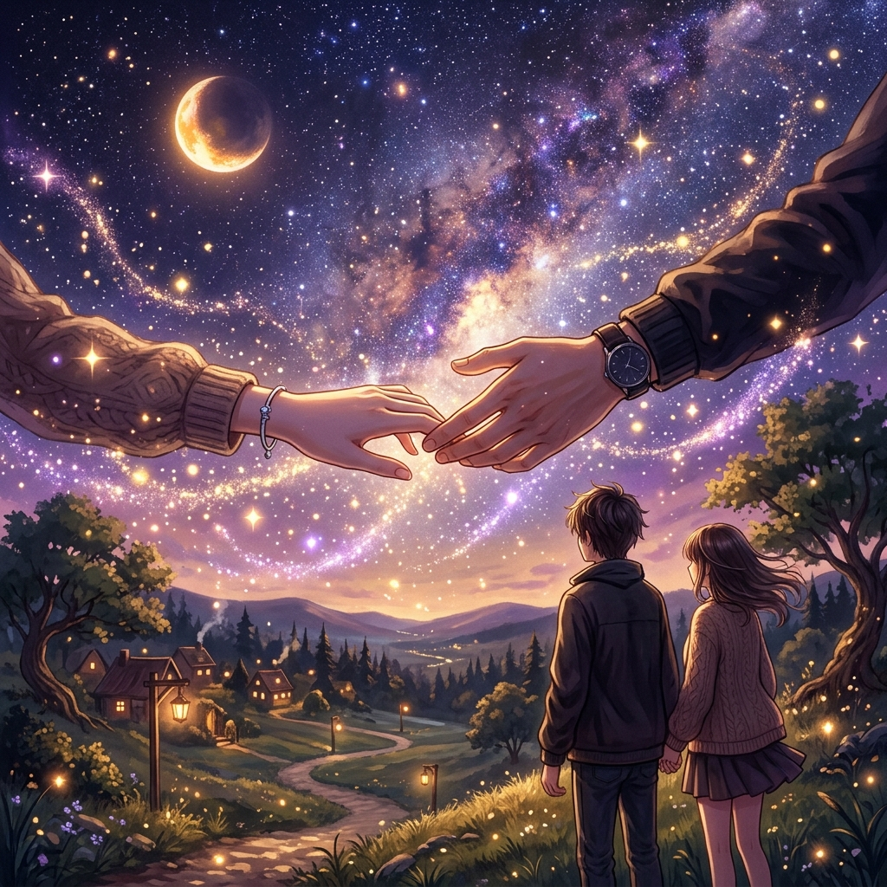
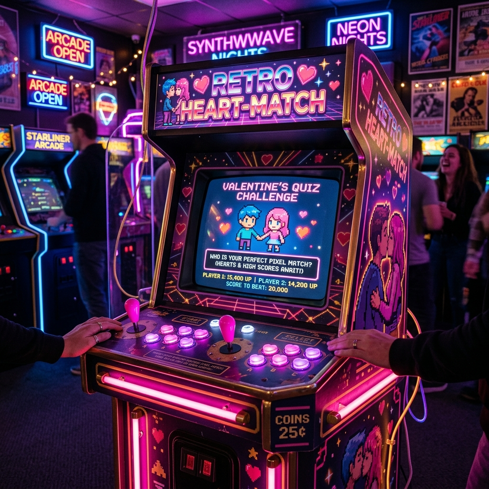
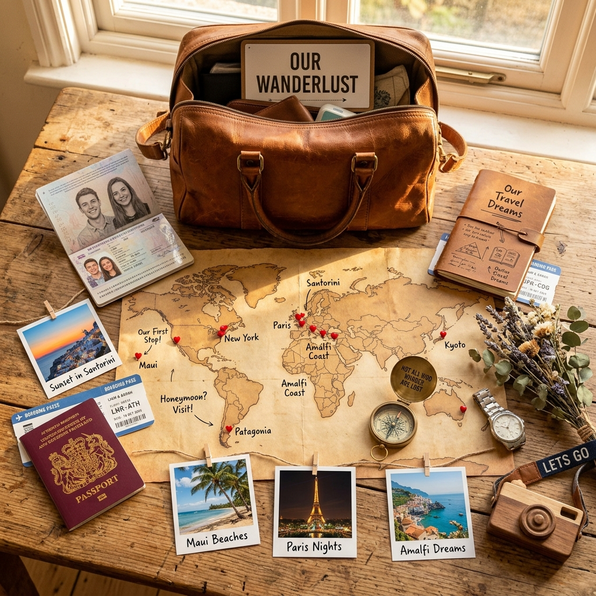

26 de Febrero de 2026 · 22:54 hrs
???
Bajo las Mismas Estrellas
Nos separan ??? km de distancia física,
pero no existe distancia para lo que sentimos.
Cartas, música, recuerdos y desafíos guardados en un lugar creado con todo mi corazón para ti.


